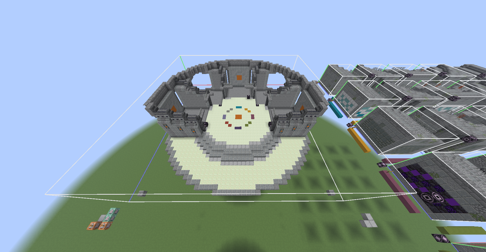
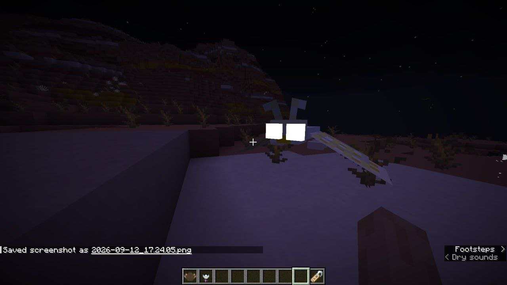
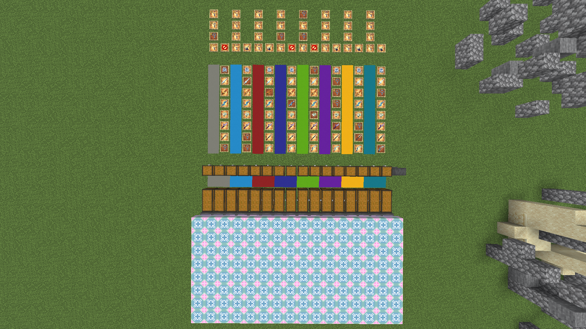
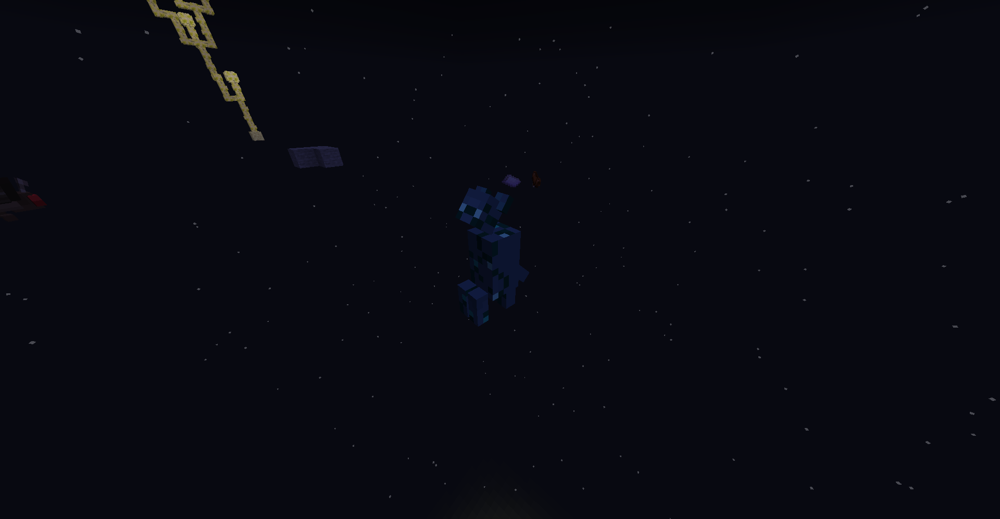

GILE DOCUMENTATION
Known Issues
A tracker for currently known bugs, conflicts, and performance issues in the mod.
Current Bug Tracker
- Currently, there are no documented active bugs for the latest release. There are only some self-made features, unsolvable dilemmas, that may change in later versions. They are listed right below:
- Plants should not be placeable on End Stone, but actually can, including the vanilla ones.
- Hovering Ghosts & Luminous aren't spawning on peacefull difficulty, even though are harmless.
- Monster Hunter does not grant for killing Void Slime, Ender Fly & Ruin Guard.
Reporting an Issue or Suggestion
If you encounter a bug, crash, or gameplay issue that is not documented above, I want to hear about it!
Please contact me directly at: masterhamster837@gmail.com
When reporting a bug, it helps immensely if you include:
- The version of GILE you are running.
- Your Minecraft and Fabric Loader versions.
- The crash report or latest.log (if applicable).
- A brief description of what you were doing when the issue occurred.
Here are some screenshots I found funny or interesting, made during GILE development and debugging. Don't worry, neither of game-changing issues is in the current version, all of them were successfully fixed!

Ancient Ruins development
Am I gonna fight the Sun?
Wish Table weapons chances testing
I've seen that somewhere, didn't I?